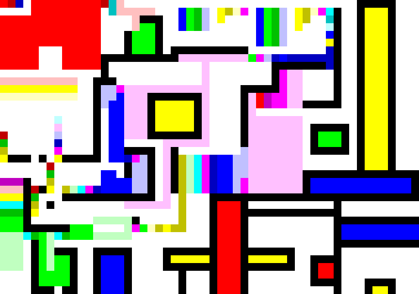
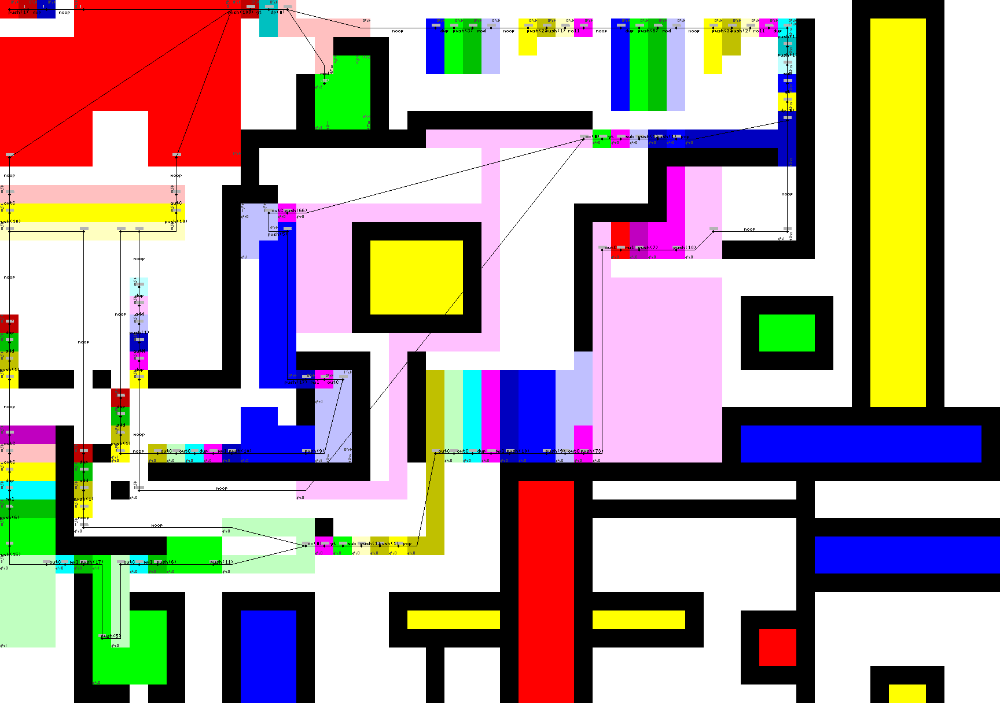

I just finished up rebuilding my personal site using hakyll (a static site generator library for haskell). As my inaugural blog post, I’m publishing a little blurb about one of my favorite programs I’ve written (or seen in general).
Back in April of 2012, I was up in Cleveland, Ohio visiting my family for a Passover seder. Late at night while everyone else was rightly asleep, I stumbled across an article on Hacker News about Hacker School. It seemed like the ideal way to spend a summer… writing Open Source software with a bunch of awesome programers in NYC? count me in! (Hacker School was awesome BTW) The application was pretty sparse, it essentially asked for a link to your github, a couple of personal opinion questions, and for a short fizzbuzz program.
I was a little worried about standing out from the other applicants. I didn’t have much on my github & who knows how to properly answer those personal opinion questions anyway?! I needed to shine with my fizzbuzz. I’ve always been amused by esoteric programming languages like Malbolge and BrainFuck. After looking around, I decided I’d spend the 4 hour train ride back to Rochester (where I attend RIT) writting a program in piet. (Trains are awesome to write programs on… In fact, I’m pretty sure that trains are the most awesome form of travel out there).
Piet is one of the more famous esoteric programming languages. It’s designed to look like the work of Piet Mondrian, a pioneer in abstract geometric art. Sure, the artistic purists out there will argue that Mondrian only used primary colors… oh well a little more complexity is nice. The actual source code is the image, usually a .PNG or .PPM file. Every block of color gets a numerical value based on the surface area of an uninterupted section of color. Operations are performed depending on the change in hue or lightness.
Here is the trace generated by the npiet interpreter. If you are interested in writing a piet program, I’d highly advise using the npietedit tool. I really wish I had known about it when I wrote this program in gimp.
